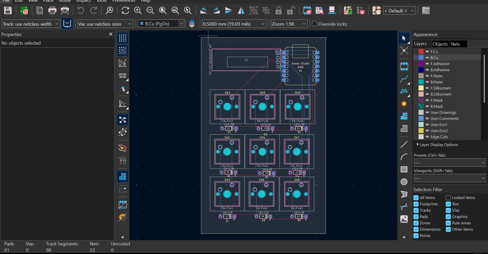

Thsi is where I will add my informatics projects. Not only the programming ones,, but also the electronics ones

This project also appears in my 3D projects since it has also a pcb design part and a firmware part. Right now it is the my only finished project worth seeing.